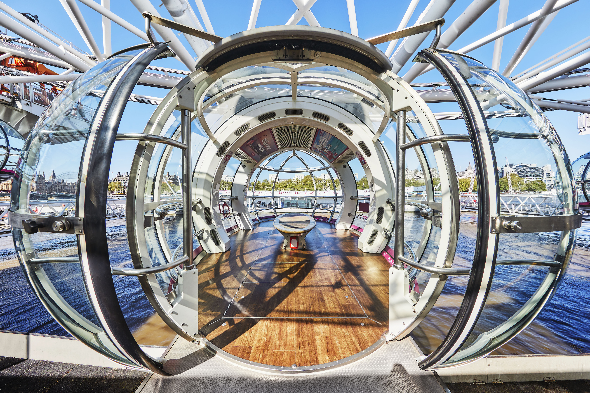
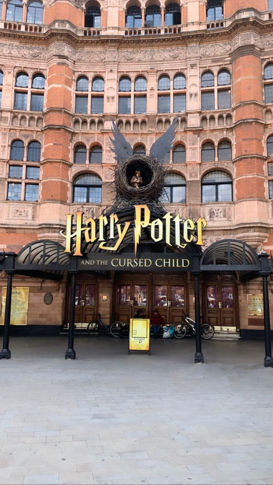
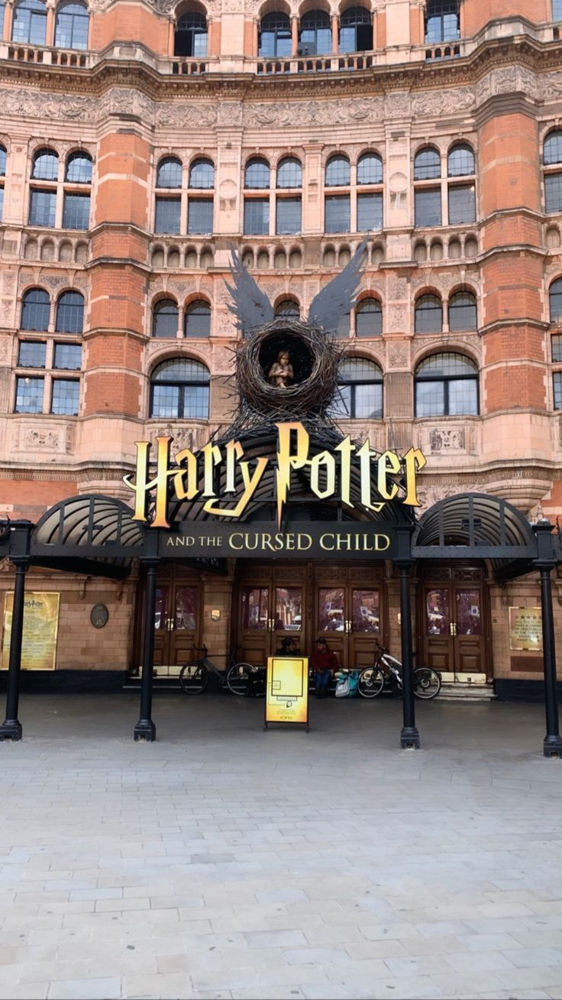

Experience unparalleled 360-degree views over London on the lastminute.com London Eye - the world’s tallest
cantilevered observation wheel at 135m (443 ft) high! Wave hello to some of London’s most spectacular
landmarks,
including Big Ben, Buckingham Palace and St Paul’s Cathedral.
Built to celebrate the millennium in 2000, the special engineering achievement has become a symbol of the
modern
capital and a world-famous icon of architecture.
Construction: The London Eye was constructed as part of the millennium celebrations, hence its
original
name, the Millennium Wheel.
Development: It was a significant engineering project, constructed in sections and floated up the
River
Thames on barges before being assembled on site.
Ownership: Initially operated by British Airways, it has since changed ownership multiple times. It
is currently operated by Merlin Entertainments.

Backingham Palace
Overview:
Buckingham Palace, located in the heart of London, is the official residence and administrative
headquarters
of the British monarch. With its rich history, stunning architecture, and beautiful gardens, it stands
as
one of the most iconic landmarks in the world.
History:
Originally built in 1703 as Buckingham House, it was acquired by King George III
in
1761 as a private residence for Queen Charlotte. The palace has undergone several expansions and
renovations
over the centuries.
Design: The palace boasts a neoclassical architectural style. Key architects involved
include
John
Nash and Edward Blore.
Features: It comprises 775 rooms, including 19 State Rooms, 52 Royal and guest bedrooms, 188 staff
bedrooms, 92 offices, and 78 bathrooms.
he Balcony: This is perhaps the most famous part of Buckingham Palace, where the Royal Family appears
during significant events and celebrations.
Warner Bros. Studio Tour London - The Making of
Harry Potter
Discover the magic behind spellbinding special effects, uncover
behind-the-scenes
secrets and step onto real-life sets from the Harry Potter film series at Warner Bros. Studio Tour London.
Watch the magic of the films come to life with original costumes, interactive sets and real props from the
Harry
Potter film series.
Explore the iconic Great Hall, wander the cobbles of Diagon Alley and board the Hogwarts Express on Platform
9 ¾
to snap a photo with the iconic luggage trolley.
This mesmerising studio tour gives you a glimpse into the magical wizarding world that has captivated people
from around the world of all ages.
History: The
house was constructed during the late Qajar Dynasty by Mirza Ibrahim Khan,
known as Ghavam-ol-Molk,
a prominent governor and politician. It served as the residence and reception area for the Ghavam family,
who were influential in Shiraz's
political and social affairs.
Design and Architecture:
Qavam House showcases traditional Persian architecture,
with intricate tile work,
colorful stained glass windows,
and detailed stucco decorations. The house features a central courtyard with a rectangular pool and garden,
typical of Persian houses. The interior of the house is adorned with mirrors,
mosaics,
and carved wooden ceilings,
adding to its luxurious appearance.
Cultural Significance: The house and garden are recognized as important examples of Persian architecture
and
garden design. Qavam House has been a source of inspiration for poets and artists,
reflecting the rich cultural heritage of Shiraz.


.jpeg)
 copy 3.jpeg)
 copy 2.jpeg) 
